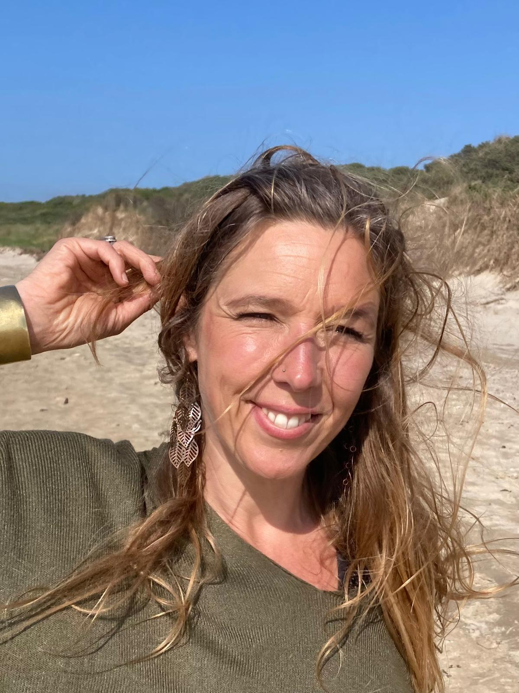

Info & Contact met N-zicht
|  |
Fien Morel Erkend Bach Bloesem Consulent en Lichaamsgericht Therapeut Biodanza docent onder supervisie van Annette Heynderickx Veldstraat 39, 8200 Sint-Michiels (Brugge) GSM: +32 486 52 41 56 mail: info@n-zicht.be |
<iframe id=“gmap_canvas” src=“